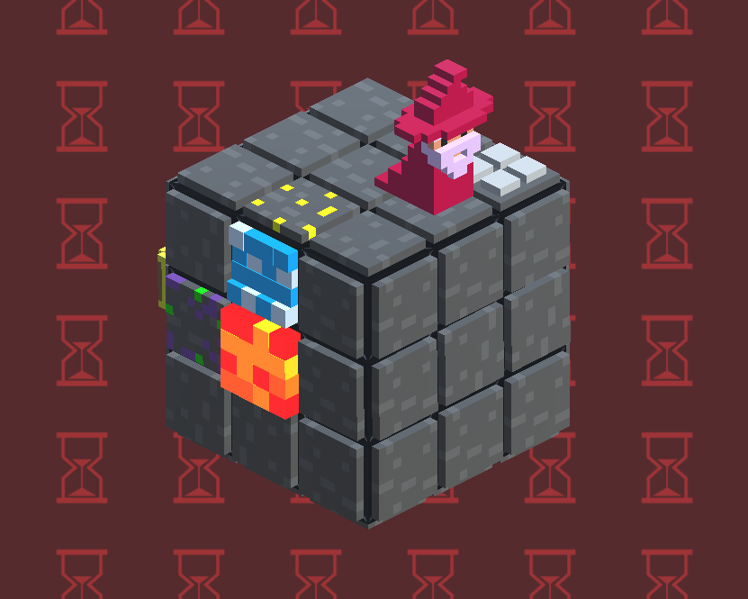

Hover
Hover is a work-in-progress, experimental hardware game with an alternative
controller made with Arduino. In this one, the players must use communication and
cooperation to manipulate a aircraft that they need to land on a designated platform.
The ship has four thrusters that are controlled by four potentiometers.
Émile et Moi
Émile et Moi is a platformer that uses
procedural grammar to write poems. The player jumps on platforms that contain a word,
and the thus chosen word is added to the poem that the player is creating. The words are
picked from a database of 200 francophone texts of classic Quebecois poets using Markov
chains. Émile et Moi has a twitter
account, and tweets the creations of the players
who fall down.
The File Explorer
The File Explorer is a text-based adventure game in the classical sense. In
this game, the player explores the domain of an old Victorian mansion through folders
and text-files. Interactivity comes in the form of batch files, some of which move
through the folders by themselves.
La Ligne Pointilée
La Ligne Pointillée is a rhythm game where the player controls a metro line
that grows when it reaches passenger. It was made for an open-air expo during the summer
of 2018 at the Station F-MR by Projet MR-63. Set in the old decommissioned
Montreal metro train, it's nostalgic style and gameplay was designed with this peculiar
theme in mind. It's definetly not Snake.
Mut8
Mut8 is a work-in-progress, terminal-based classic roguelike with a twist: it
is made with an Entity Component System and it's architecture is thus highly compatible
with data-driven design techniques, and is characterized by a very flexible runtime in
terms of variability in function and behaviours.
Rubik-Like

Rubik-Like is a puzzlish roguelike played on a Rubik's cube. The player must
manipulate the cube in order to acquire treasure and defeat enemies.
New York Dragon

New York Dragon is another experimental game mad with alternative hardware
controls made with Arduino. In this one, the player is a fire-breathing dragon, but the
controller is a breathalizer that measure ethanol. The more ethanol is in the breath of
the player, the more flame is produced.
Out of the Woods
Out of the Woods is my first ever game. It's a survival and exploration game
for mobile with crafting and management elements. It is set on a procedurally generated
array of hexagonal tiles. The player, lost in a forest, must manage his hunger, thirst
and body temperature and explore the environment in order to get to safety.
G**mba World

G**mba World is a mobile game that I made in a couple days as a joke to some friends. It's
about dodging stuff that falls down. It has online rankings and an achievement system.
Bullet Command

Bullet Command A coop, reverse shoot ‘em up with a custom controller panel made
with Arduino. The panel is
made up of multiple hardware inputs, joysticks, switches, numpad, LCD monitors,
key-switches, etc.
Lost Signals
Lost Signal is a
collection of mini-games and media, told through an old TV set and a floating record
player. It focuses on the transformation of signal when communicated;
how the medium alters its representation and how that
representation translates to another when transmitted anew.
Everything Die
Everything Die is not at all as violent as it sounds. It's a grid-based puzzle
game where the player controls a cube that rotates when it moves around, and can acquire
one-use item that are held on the faces of the cube. You can only use an item if the
face that holds it is pointing up. I made a 2D version and a 3D demo.